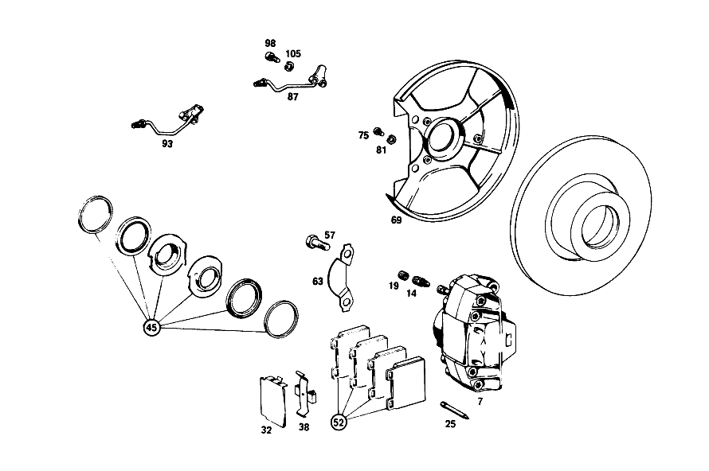

| № | Артикул | Название | Кол. | Примечание | Ограничение |
|---|---|---|---|---|---|
| 7 | A 001 421 81 98 | Тормозной суппорт | 1 | 001 421 73 98 | |
| 14 | A 000 420 17 55 | - Клапан выпуска воздуха | 2 | ||
| 19 | A 000 421 71 87 | - КОЛПАЧОК | - | ||
| 19 | A 000 421 08 87 | - Защитный колпачок | 2 | ||
| 25 | A 000 991 03 60 | Фиксирующий штифт | 4 | ||
| 32 | A 000 421 02 20 | Щиток | 2 | ||
| 38 | A 000 421 02 91 | Разжимная пружина | 2 | ||
| 45 | A 000 586 64 42 | ремкомплект | 2 | TEVES | |
| 52 | A 001 420 77 20 | К-т тормозных колодок | 1 | К\-Т ДЕТАЛЕЙ | |
| 57 | A 111 421 03 71 | болт | 4 | ||
| 63 | A 115 994 07 32 | Стопорная шайба | 2 | ||
| 69 | A 108 420 02 44 | ЗАЩИТНАЯ ПАНЕЛЬ | 1 | ||
| 75 | N 000912 006040 | Цилиндрич. винт | 4 | ||
| 81 | N 007980 006000 | Пружинное кольцо | 4 | ||
| 87 | A 108 420 00 28 | Тормозная трубка | 1 | СЛЕВА | |
| 93 | A 108 420 01 28 | Тормозная трубка | 1 | СПРАВА | |
| 98 | N 000912 006063 | Цилиндрич. винт | - | ||
| 98 | N 000912 006170 | Цилиндрич. винт | 2 | ||
| 105 | N 007980 006000 | Пружинное кольцо | 4 | ||
| 112 | A 000 420 38 83 | СКОБА ТОРМОЗН. МЕХАНИЗМА | - | ||
| 120 | A 000 420 16 55 | Клапан выпуска воздуха | 1 | [003] UP TO CHASSIS 003467 EXCEPT FOR 003458,003462,003464 | |
| 126 | A 000 421 71 87 | - КОЛПАЧОК | - | ||
| 126 | A 000 421 08 87 | - Защитный колпачок | 2 | ||
| 132 | A 000 423 29 83 | ПОРШЕНЬ | 4 | [003] UP TO CHASSIS 003467 EXCEPT FOR 003458,003462,003464 | |
| 137 | A 000 991 03 60 | - Фиксирующий штифт | 4 | ||
| 142 | A 000 421 17 91 | - Разжимная пружина | 2 | ||
| 148 | A 000 586 15 43 | набор уплотнений | 2 | [003] UP TO CHASSIS 003467 EXCEPT FOR 003458,003462,003464 | |
| 153 | A 000 420 70 20 | К-т тормозных колодок | - | ||
| 153 | A 001 420 79 20 | К-т тормозных колодок | 1 | К\-Т ДЕТАЛЕЙ | |
| 160 | A 108 420 02 86 | Держатель | 2 | ||
| 164 | N 000960 012043 | Винт | 4 | ||
| 169 | A 115 423 02 73 | Стопорная шайба | 4 | ||
| 174 | A 108 423 00 20 | Щиток | 2 | ||
| 177 | A 108 420 01 17 | Несущая пластина | 2 | ||
| 182 | A 001 997 34 46 | Уплотнительное кольцо | 2 | ||
| 185 | A 001 997 47 46 | Уплотнительное кольцо | 2 | ||
| 188 | A 110 423 00 79 | уплотнение | 2 | ||
| 192 | A 108 357 00 71 | Болт призонный | 12 | ||
| 196 | N 006797 008120 | Зубчатая шайба | 12 | [402] БОЛЬШЕ НЕ ПОСТАВЛЯЕТСЯ | |
| 201 | N 000934 008010 | Гайка | - | ||
| 201 | N 304032 008006 | Шестигранная гайка | 12 | M8 | |
| 207 | A 126 420 01 20 | Тормозная колодка | 1 | ||
| 212 | A 123 420 00 73 | Болт, особая форма | 2 | ||
| 217 | A 116 423 00 50 | втулка | 2 | ||
| 222 | A 114 586 01 42 | РЕМКОМПЛЕКТ | - | ЗАМОК НАТЯЖНОЙ [412] БОЛЬШЕ НЕ ПОСТАВЛЯЕТСЯ, ЗАКАЗЫВАТЬ ОТДЕЛЬНЫЕ ДЕТАЛИ | |
| 228 | A 108 423 01 92 | пружина | - | ||
| 228 | A 901 993 13 10 | пружина | 2 | ||
| 233 | A 108 423 07 92 | пружина | 2 | ||
| 245 | A 108 423 00 92 | пружина | 2 | ||
| 251 | A 000 430 55 30 | УСИЛИТЕЛЬ ТОРМ. ПРИВОДА | 1 | Рулевое управление: Влево [008] UP TO CHASSIS 001503 EXCEPT FOR 001431,001486,001495,001499,001501 | |
| 251 | A 000 430 55 30 | УСИЛИТЕЛЬ ТОРМ. ПРИВОДА | 1 | Рулевое управление: Вправо [012] UP TO CHASSIS 002863 EXCEPT FOR 002123,002193,002327,002402,002539,002546,002726,002731,002744,002748,002757,002760,002763,002797,002862 | |
| 261 | A 001 586 41 43 | ремкомплект | 1 | Рулевое управление: Влево [008] UP TO CHASSIS 001503 EXCEPT FOR 001431,001486,001495,001499,001501 | |
| 261 | A 001 586 41 43 | ремкомплект | 1 | Рулевое управление: Вправо [012] UP TO CHASSIS 002863 EXCEPT FOR 002123,002193,002327,002402,002539,002546,002726,002731,002744,002748,002757,002760,002763,002797,002862 | |
| 266 | A 000 430 36 81 | Корпус | 1 | С УПЛОТНИТ.ПРОКЛАДКОЙ Рулевое управление: Влево [008] UP TO CHASSIS 001503 EXCEPT FOR 001431,001486,001495,001499,001501 | |
| 266 | A 000 430 36 81 | Корпус | 1 | С УПЛОТНИТ.ПРОКЛАДКОЙ Рулевое управление: Вправо [012] UP TO CHASSIS 002863 EXCEPT FOR 002123,002193,002327,002402,002539,002546,002726,002731,002744,002748,002757,002760,002763,002797,002862 | |
| 271 | A 000 431 29 87 | КОЛПАЧОК | 1 | Рулевое управление: Влево [008] UP TO CHASSIS 001503 EXCEPT FOR 001431,001486,001495,001499,001501 | |
| 271 | A 000 431 29 87 | КОЛПАЧОК | 1 | Рулевое управление: Вправо [012] UP TO CHASSIS 002863 EXCEPT FOR 002123,002193,002327,002402,002539,002546,002726,002731,002744,002748,002757,002760,002763,002797,002862 | |
| 277 | A 002 430 28 01 | Главный цилиндр | 1 | ||
| 277 | A 003 430 22 01 | Главный цилиндр | 1 | ||
| 283 | N 000472 028000 | - Стопорное кольцо | 1 | ||
| 287 | A 004 997 32 45 | - Уплотнительное кольцо | 1 | ||
| 293 | A 001 586 93 43 | ремкомплект | 1 | ||
| 297 | N 000127 008200 | КОЛЬЦО ПРУЖИННОЕ | 2 | ||
| 302 | N 000934 008013 | Гайка | 2 | ||
| 320 | A 000 431 64 02 | БАЧОК | 1 | ||
| 325 | A 000 431 43 34 | Сетка | 1 | ||
| 331 | A 000 431 09 35 | СОЕДИНИТЕЛЬ | 2 | ||
| 336 | A 000 431 54 33 | Запорная крышка | 1 | ||
| 341 | A 000 997 29 40 | Уплотнительное кольцо | 1 | ||
| 347 | A 001 542 63 17 | Ремк-т датчика уровня | 1 | ||
| 352 | A 000 431 75 60 | Уплотнение | 2 | ||
| 363 | A 000 431 75 60 | Уплотнение | 2 | ||
| 366 | A 000 431 00 62 | Брызгозащитная панель | 1 | ||
| 381 | N 000835 008064 | - Винт | 1 | ||
| 387 | A 108 431 00 80 | ПРОКЛАДКА УПЛОТНИТЕЛЬНАЯ | 1 | [012] UP TO CHASSIS 002863 EXCEPT FOR 002123,002193,002327,002402,002539,002546,002726,002731,002744,002748,002757,002760,002763,002797,002862 | |
| 392 | A 094 295 01 00 | болт | - | ||
| 392 | A 115 295 01 72 | Эксцентриковая гайка | 1 | ||
| 398 | N 000127 008203 | Пружинное кольцо | 1 | ||
| 403 | N 000936 008012 | Гайка | 1 | ||
| 408 | A 111 430 07 29 | ПРОВОД | 1 | FROM INTAKE ELBOW TO BRAKE BOOSTER Рулевое управление: Влево [008] UP TO CHASSIS 001503 EXCEPT FOR 001431,001486,001495,001499,001501 | |
| 413 | N 915017 012200 | Гайка | 1 | [008] UP TO CHASSIS 001503 EXCEPT FOR 001431,001486,001495,001499,001501 | |
| 418 | A 000 431 36 07 | Клапан | 1 | [008] UP TO CHASSIS 001503 EXCEPT FOR 001431,001486,001495,001499,001501 | |
| 423 | A 111 435 02 27 | ОТРАЖАТЕЛЬ | 1 | Рулевое управление: Влево [008] UP TO CHASSIS 001503 EXCEPT FOR 001431,001486,001495,001499,001501 [402] БОЛЬШЕ НЕ ПОСТАВЛЯЕТСЯ | |
| 428 | A 000 435 21 82 | Шланг | NB | [008] UP TO CHASSIS 001503 EXCEPT FOR 001431,001486,001495,001499,001501 | |
| 438 | A 123 420 55 28 | Провод | 1 | TO LEFT FRONT WHEEL Рулевое управление: Влево [409] ПРИ МОНТАЖЕ ПОДОГНАТЬ ПО МЕСТУ [012] UP TO CHASSIS 002863 EXCEPT FOR 002123,002193,002327,002402,002539,002546,002726,002731,002744,002748,002757,002760,002763,002797,002862 | |
| 443 | A 123 420 70 28 | Провод | 1 | TO RIGHT FRONT WHEEL; 4.75X0.7X1495MM Рулевое управление: Влево [409] ПРИ МОНТАЖЕ ПОДОГНАТЬ ПО МЕСТУ [012] UP TO CHASSIS 002863 EXCEPT FOR 002123,002193,002327,002402,002539,002546,002726,002731,002744,002748,002757,002760,002763,002797,002862 | |
| 455 | A 121 429 01 34 | 6-гр. распорный элемент | 1 | M10 Рулевое управление: Вправо | |
| 461 | A 000 431 35 12 | Регулирующий клапан | 1 | [019] UP TO CHASSIS 003467 EXCEPT FOR 003458,003462,003464 | |
| 467 | N 000127 008203 | Пружинное кольцо | 2 | [019] UP TO CHASSIS 003467 EXCEPT FOR 003458,003462,003464 | |
| 472 | N 304032 008006 | Шестигранная гайка | 2 | M8 [019] UP TO CHASSIS 003467 EXCEPT FOR 003458,003462,003464 | |
| 479 | A 000 428 37 24 | РАСПРЕДЕЛИТЕЛЬ | 1 | СЗАДИ [018] FROM CHASSIS 003468 ALSO INSTALLED ON 003458,003462,003464 | |
| 483 | A 120 420 02 27 | Т-образный винт | 1 | с LOCK [018] FROM CHASSIS 003468 ALSO INSTALLED ON 003458,003462,003464 | |
| 488 | A 000 987 38 41 | КОЛЬЦО РЕЗИНОВОЕ | 1 | [018] FROM CHASSIS 003468 ALSO INSTALLED ON 003458,003462,003464 | |
| 492 | A 094 990 68 10 | Пружинное кольцо | 1 | [018] FROM CHASSIS 003468 ALSO INSTALLED ON 003458,003462,003464 | |
| 499 | N 000934 006007 | Гайка | 1 | [018] FROM CHASSIS 003468 ALSO INSTALLED ON 003458,003462,003464 | |
| 506 | A 123 420 65 28 | Провод | 1 | [409] ПРИ МОНТАЖЕ ПОДОГНАТЬ ПО МЕСТУ [019] UP TO CHASSIS 003467 EXCEPT FOR 003458,003462,003464 | |
| 511 | A 123 428 05 35 | Тормозной шланг | 2 | СПЕРЕДИ | |
| 516 | A 000 428 06 73 | Удерживающая пружина | 2 | ||
| 521 | A 110 428 00 73 | Стопорная шайба | 2 | ||
| 525 | N 000933 006103 | Винт | - | ||
| 525 | N 304017 006018 | Винт с 6-гранной головкой | 2 | M6X12 | |
| 530 | N 000137 006204 | Пружинная шайба | 2 | ||
| 536 | A 000 990 22 91 | ГАЙКОДЕРЖАТЕЛЬ | - | ||
| 536 | A 001 990 67 91 | Гайкодержатель | 2 | С ГАЙКОЙ [415] ПРИМЕЧ. ПО ЗАМЕНЕ ПРИМЕНИМО ТОЛЬКО ДЛЯ СТОЯЩИХ РЯДОМ ПОЗИЦИЙ | |
| 541 | A 110 997 07 81 | резиновая втулка | 2 | ||
| 547 | A 000 428 79 35 | Тормозной шланг | 1 | [019] UP TO CHASSIS 003467 EXCEPT FOR 003458,003462,003464 | |
| 553 | A 123 420 60 28 | Провод | 1 | TO LEFT REAR WHEEL; 580 MM [409] ПРИ МОНТАЖЕ ПОДОГНАТЬ ПО МЕСТУ | |
| 558 | A 000 428 31 35 | ТОРМОЗНОЙ ШЛАНГ | - | ||
| 558 | A 000 428 26 35 | Тормозной шланг | 1 | СПРАВА | |
| 561 | A 123 420 59 28 | Провод | 1 | TO RIGHT REAR WHEEL [409] ПРИ МОНТАЖЕ ПОДОГНАТЬ ПО МЕСТУ | |
| 567 | A 126 328 01 81 | Резиновая опора | NB | 20 MM | |
| 572 | A 000 988 33 78 | Скоба | 4 | ||
| 578 | A 000 987 09 32 | Шланг | 5 | 25 MM ORDER BY THE METER [404] ЗАКАЗЫВАТЬ ПОГОННЫМИ МЕТРАМИ | |
| 583 | A 110 428 01 85 | Демпферная лента | 3 | Рулевое управление: Вправо | |
| 589 | A 115 995 01 01 | ХОМУТ | 3 | Рулевое управление: Влево | |
| 595 | A 201 428 00 40 | Держатель | 1 | Рулевое управление: Вправо | |
| 601 | A 108 995 06 20 | ХОМУТ | 6 | ||
| 608 | A 000 987 38 41 | КОЛЬЦО РЕЗИНОВОЕ | 6 | ||
| 615 | A 108 420 01 88 | Тяга собачки | 1 | Рулевое управление: Влево | |
| 615 | A 108 420 01 88 | Тяга собачки | 1 | Рулевое управление: Вправо [012] UP TO CHASSIS 002863 EXCEPT FOR 002123,002193,002327,002402,002539,002546,002726,002731,002744,002748,002757,002760,002763,002797,002862 | |
| 621 | A 112 427 00 86 | - Демпфирующее кольцо | 1 | ||
| 631 | A 112 420 04 77 | НАПРАВЛЯЮЩАЯ | 1 | Рулевое управление: Вправо [012] UP TO CHASSIS 002863 EXCEPT FOR 002123,002193,002327,002402,002539,002546,002726,002731,002744,002748,002757,002760,002763,002797,002862 | |
| 637 | A 120 427 01 15 | - Собачка | 1 | ||
| 642 | A 120 993 00 20 | - пружина | 1 | ||
| 648 | A 000 991 00 81 | - Заклепка | 1 | ||
| 648 | A 000 991 00 81 | Заклепка | 3 | Рулевое управление: Вправо [012] UP TO CHASSIS 002863 EXCEPT FOR 002123,002193,002327,002402,002539,002546,002726,002731,002744,002748,002757,002760,002763,002797,002862 | |
| 653 | A 111 427 16 81 | КОРПУС | 1 | Рулевое управление: Вправо [012] UP TO CHASSIS 002863 EXCEPT FOR 002123,002193,002327,002402,002539,002546,002726,002731,002744,002748,002757,002760,002763,002797,002862 | |
| 659 | A 111 427 01 84 | ВКЛАДКА | 1 | Рулевое управление: Вправо [012] UP TO CHASSIS 002863 EXCEPT FOR 002123,002193,002327,002402,002539,002546,002726,002731,002744,002748,002757,002760,002763,002797,002862 [402] БОЛЬШЕ НЕ ПОСТАВЛЯЕТСЯ | |
| 665 | A 121 427 00 59 | УПЛОТНИТЕЛЬНАЯ ШАЙБА | 1 | Рулевое управление: Вправо | |
| 671 | A 110 427 02 42 | ШКИВ ТРОСИКА | 1 | Рулевое управление: Вправо [012] UP TO CHASSIS 002863 EXCEPT FOR 002123,002193,002327,002402,002539,002546,002726,002731,002744,002748,002757,002760,002763,002797,002862 | |
| 677 | A 110 427 01 42 | ШКИВ ТРОСИКА | 1 | Рулевое управление: Вправо | |
| 683 | A 110 427 02 46 | ПЛАСТИНА НАПРАВЛЯЮЩАЯ | 1 | Рулевое управление: Вправо | |
| 689 | A 187 427 01 53 | РАСПОРН. ТРУБКА | 1 | Рулевое управление: Вправо [402] БОЛЬШЕ НЕ ПОСТАВЛЯЕТСЯ | |
| 692 | A 180 427 01 74 | Палец | 1 | Рулевое управление: Вправо | |
| 697 | N 000137 008100 | Пружинная шайба | 1 | Рулевое управление: Вправо | |
| 701 | A 110 427 01 53 | РАСПОРН. ТРУБКА | 1 | Рулевое управление: Вправо | |
| 709 | A 111 420 32 85 | Тормозной трос | 1 | СПЕРЕДИ Рулевое управление: Влево | |
| 718 | A 120 991 00 61 | Просечной штифт | 1 | ||
| 722 | A 111 427 02 84 | ВКЛАДКА | 2 | Рулевое управление: Влево [027] 024/025 UP TO CHASSIS 004512; 026/027 UP TO CHASSIS 000266 | |
| 726 | A 110 427 00 96 | Манжета | 1 | ||
| 731 | A 112 420 04 90 | НАПРАВЛЯЮЩАЯ | 1 | Рулевое управление: Влево | |
| 736 | A 112 420 04 12 | РЫЧАГ ТОРМОЗА | 1 | ||
| 740 | A 110 427 00 50 | - ВТУЛКА | 1 | ||
| 745 | A 110 427 07 12 | НАПРАВЛ. ЭЛЕМЕНТ | 1 | ||
| 748 | N 000961 010012 | Винт | 1 | ||
| 751 | N 912004 010102 | Пружинное кольцо | 1 | ||
| 757 | N 000961 010012 | Винт | 1 | ||
| 760 | N 912004 010102 | Пружинное кольцо | 1 | ||
| 764 | N 000125 010504 | ШАЙБА | 1 | ||
| 773 | N 000094 003000 | ШПЛИНТ | 1 | ||
| 790 | A 110 420 14 42 | Рычаг торм.механизма | 1 | ||
| 795 | A 108 420 06 73 | БОЛТ | 1 | ||
| 801 | A 110 427 01 13 | Рычаг | 1 | ||
| 808 | N 001434 008031 | БОЛТ | 1 | ||
| 815 | A 108 427 00 72 | гайка | 1 | HAND BRAKE ADJUSTMENT | |
| 822 | N 001434 006034 | Палец | 1 | ||
| 830 | A 110 993 11 10 | пружина | 1 | ||
| 836 | A 110 427 09 41 | ДЕРЖАТЕЛЬ | 1 | ||
| 843 | A 108 420 07 85 | Тормозной трос | 1 | СЛЕВА | |
| 850 | A 108 420 08 85 | Тормозной трос | 1 | СПРАВА | |
| 860 | A 108 427 05 96 | Манжета | 1 | ||
| A 001 421 02 98 | СКОБА ТОРМОЗН. МЕХАНИЗМА | - | |||
| A 001 421 26 98 | СКОБА ТОРМОЗН. МЕХАНИЗМА | - | |||
| A 002 421 54 98 | Тормозной суппорт | 1 | LEFT;TEVES;LESS LINING | ||
| A 001 421 03 98 | СКОБА ТОРМОЗН. МЕХАНИЗМА | - | |||
| A 001 421 82 98 | Тормозной суппорт | 1 | 001 421 74 98 | ||
| A 001 421 27 98 | СКОБА ТОРМОЗН. МЕХАНИЗМА | - | |||
| A 002 421 55 98 | Тормозной суппорт | 1 | RIGHT,TEVES,LESS LINING | ||
| A 000 421 35 83 | - Поршень | 4 | |||
| A 000 991 12 60 | - Фиксирующий штифт | 1 | |||
| A 000 421 06 91 | - Разжимная пружина | 1 | |||
| A 001 421 73 98 | СКОБА ТОРМОЗН. МЕХАНИЗМА | 1 | 001 421 81 98 | ||
| A 001 421 74 98 | СКОБА ТОРМОЗН. МЕХАНИЗМА | 1 | 001 421 82 98 | ||
| A 000 421 44 83 | - Поршень | 4 | |||
| A 000 991 18 60 | - ШТИФТ | - | |||
| A 000 991 26 60 | - Фиксирующий штифт | 4 | |||
| A 000 421 12 91 | - Разжимная пружина | 4 | [417] БОЛЬШЕ НЕ ПОСТАВЛЯЕТСЯ, ЗАКАЗЫВАТЬ КОМПЛЕКТ ПОСТАВКИ | ||
| A 000 421 02 73 | - ПРЕДОХРАНИТЕЛЬ | - | |||
| A 000 421 05 73 | - предохранитель | 2 | |||
| A 000 421 03 73 | - ПРЕДОХРАНИТЕЛЬ | - | |||
| A 000 421 05 73 | - предохранитель | 2 | |||
| A 000 421 05 20 | - Щиток | 2 | |||
| A 000 420 46 55 | - Клапан выпуска воздуха | 2 | |||
| A 001 586 00 42 | набор уплотнений | 1 | BENDIX | ||
| A 001 420 77 20 | К-т тормозных колодок | 1 | К\-Т ДЕТАЛЕЙ | ||
| A 109 421 00 71 | болт | 4 | |||
| A 115 994 07 32 | Стопорная шайба | 2 | |||
| A 108 420 03 44 | Щиток | 1 | |||
| A 109 420 13 44 | Щиток | 2 | |||
| N 000912 006064 | Винт | 2 | |||
| A 000 420 46 83 | Тормозной суппорт | 1 | LEFT,TEVES,LESS LINING [003] UP TO CHASSIS 003467 EXCEPT FOR 003458,003462,003464 | ||
| A 000 423 42 98 | СКОБА ТОРМОЗН. МЕХАНИЗМА | - | [004] FROM CHASSIS 003468 ALSO INSTALLED ON 003458,003462,003464 | ||
| A 000 423 95 98 | Тормозной суппорт | 1 | LEFT,TEVES,LESS LINING [026] УЧЕСТЬ ДОПОЛНИТ.ЗАКАЗ.ДЕТАЛИ | ||
| A 000 420 39 83 | СКОБА ТОРМОЗН. МЕХАНИЗМА | - | |||
| A 000 420 47 83 | Тормозной суппорт | 1 | RIGHT,TEVES,LESS LINING [003] UP TO CHASSIS 003467 EXCEPT FOR 003458,003462,003464 | ||
| A 000 423 43 98 | СКОБА ТОРМОЗН. МЕХАНИЗМА | - | [004] FROM CHASSIS 003468 ALSO INSTALLED ON 003458,003462,003464 [024] 026/027 UP TO CHASSIS 004404 | ||
| A 000 423 96 98 | Тормозной суппорт | 1 | RIGHT,TEVES,LESS LINING [026] УЧЕСТЬ ДОПОЛНИТ.ЗАКАЗ.ДЕТАЛИ | ||
| A 000 420 19 55 | - Клапан выпуска воздуха | 2 | [004] FROM CHASSIS 003468 ALSO INSTALLED ON 003458,003462,003464 | ||
| A 000 423 34 83 | - Поршень | 4 | [004] FROM CHASSIS 003468 ALSO INSTALLED ON 003458,003462,003464 | ||
| A 000 586 53 43 | набор уплотнений | 2 | [004] FROM CHASSIS 003468 ALSO INSTALLED ON 003458,003462,003464 | ||
| A 001 420 79 20 | К-т тормозных колодок | 1 | К\-Т ДЕТАЛЕЙ | ||
| A 115 420 11 89 | Разжимной механ. тормоза | 2 | |||
| A 108 427 00 74 | Цилиндрический шрифт | 2 | |||
| A 001 430 84 30 | УСИЛИТЕЛЬ ТОРМ. ПРИВОДА | - | Рулевое управление: Влево | ||
| A 002 430 68 30 | Аппарат тормозной системы | 1 | Рулевое управление: Влево [009] FROM CHASSIS 001504, ALSO INSTALLED ON 001431,001486,001495,001499,001501 | ||
| A 002 430 68 30 | Аппарат тормозной системы | 1 | Рулевое управление: Вправо [013] FROM CHASSIS 002864 ALSO INSTALLED ON 002123,002193,002327,002402,002539,002546,002726,002731,002744,002748,002757,002760,002763,002797,002862 | ||
| A 000 435 09 12 | - ФИЛЬТР | 1 | Рулевое управление: Влево [009] FROM CHASSIS 001504, ALSO INSTALLED ON 001431,001486,001495,001499,001501 | ||
| A 000 435 09 12 | ФИЛЬТР | 1 | Рулевое управление: Вправо [013] FROM CHASSIS 002864 ALSO INSTALLED ON 002123,002193,002327,002402,002539,002546,002726,002731,002744,002748,002757,002760,002763,002797,002862 | ||
| A 000 431 43 87 | - Защитный колпачок | 1 | Рулевое управление: Влево [009] FROM CHASSIS 001504, ALSO INSTALLED ON 001431,001486,001495,001499,001501 | ||
| A 000 431 43 87 | Защитный колпачок | 1 | Рулевое управление: Вправо [013] FROM CHASSIS 002864 ALSO INSTALLED ON 002123,002193,002327,002402,002539,002546,002726,002731,002744,002748,002757,002760,002763,002797,002862 | ||
| A 001 586 55 43 | РЕМКОМПЛЕКТ | 1 | |||
| A 001 431 42 02 | Бак | 1 | |||
| A 000 431 43 34 | Сетка | 1 | |||
| A 000 431 54 33 | Запорная крышка | 1 | |||
| A 000 431 97 60 | УПЛОТНИТ. КОЛЬЦО | 1 | |||
| A 000 997 29 40 | Уплотнительное кольцо | 1 | |||
| A 002 542 99 17 | Датчик уровня | 1 | |||
| A 000 431 82 60 | уплотнение | 2 | КОЛПАЧОК | ||
| A 000 431 16 33 | Колпачок | 1 | [402] БОЛЬШЕ НЕ ПОСТАВЛЯЕТСЯ | ||
| A 108 430 01 45 | ФЛАНЕЦ | 1 | Рулевое управление: Влево [014] FROM CHASS.001504-002862,ALSO INST.ON 001431,001486,001495,001499-001501,EXCE.FOR 002123,002193,002327,002402,002539,002546,002726,002731,002744,002748,002757,002760,002763,002797,002862 | ||
| A 110 430 01 45 | ФЛАНЕЦ | 1 | Рулевое управление: Вправо [012] UP TO CHASSIS 002863 EXCEPT FOR 002123,002193,002327,002402,002539,002546,002726,002731,002744,002748,002757,002760,002763,002797,002862 | ||
| A 108 430 03 45 | ФЛАНЕЦ | 1 | [013] FROM CHASSIS 002864 ALSO INSTALLED ON 002123,002193,002327,002402,002539,002546,002726,002731,002744,002748,002757,002760,002763,002797,002862 | ||
| N 000137 008204 | Пружинная шайба | - | |||
| N 000137 008212 | Пружинная шайба | 4 | |||
| N 000934 008013 | Гайка | 4 | |||
| A 108 431 01 80 | уплотнение | 1 | УСИЛИТЕЛЬ ТОРМОЗНОГО ПРИВОДА К МОТОРНОМУ ЩИТУ [013] FROM CHASSIS 002864 ALSO INSTALLED ON 002123,002193,002327,002402,002539,002546,002726,002731,002744,002748,002757,002760,002763,002797,002862 | ||
| N 304017 008021 | Винт с 6-гранной головкой | 1 | M8X20 [012] UP TO CHASSIS 002863 EXCEPT FOR 002123,002193,002327,002402,002539,002546,002726,002731,002744,002748,002757,002760,002763,002797,002862 | ||
| N 000137 008200 | Пружинная шайба | 3 | УСИЛИТЕЛЬ ТОРМОЗНОГО ПРИВОДА К МОТОРНОМУ ЩИТУ | ||
| N 000934 008013 | Гайка | 3 | УСИЛИТЕЛЬ ТОРМОЗНОГО ПРИВОДА К МОТОРНОМУ ЩИТУ | ||
| A 108 430 19 29 | Вакуумный трубопровод | 1 | FROM INTAKE ELBOW TO BRAKE BOOSTER Рулевое управление: Влево [014] FROM CHASS.001504-002862,ALSO INST.ON 001431,001486,001495,001499-001501,EXCE.FOR 002123,002193,002327,002402,002539,002546,002726,002731,002744,002748,002757,002760,002763,002797,002862 | ||
| A 108 430 17 29 | Провод | 1 | FROM INTAKE ELBOW TO BRAKE BOOSTER Рулевое управление: Влево [013] FROM CHASSIS 002864 ALSO INSTALLED ON 002123,002193,002327,002402,002539,002546,002726,002731,002744,002748,002757,002760,002763,002797,002862 | ||
| A 108 430 05 29 | ПРОВОД | 1 | FROM INTAKE ELBOW TO BRAKE BOOSTER Рулевое управление: Вправо [012] UP TO CHASSIS 002863 EXCEPT FOR 002123,002193,002327,002402,002539,002546,002726,002731,002744,002748,002757,002760,002763,002797,002862 | ||
| A 108 430 18 29 | ПРОВОД | 1 | FROM INTAKE ELBOW TO BRAKE BOOSTER Рулевое управление: Вправо [013] FROM CHASSIS 002864 ALSO INSTALLED ON 002123,002193,002327,002402,002539,002546,002726,002731,002744,002748,002757,002760,002763,002797,002862 | ||
| N 900262 005100 | Стяжка | 6 | [008] UP TO CHASSIS 001503 EXCEPT FOR 001431,001486,001495,001499,001501 | ||
| N 900263 005000 | Лента | 6 | 170 MM [008] UP TO CHASSIS 001503 EXCEPT FOR 001431,001486,001495,001499,001501 | ||
| A 000 995 00 65 | ХОМУТ | 1 | Рулевое управление: Вправо [008] UP TO CHASSIS 001503 EXCEPT FOR 001431,001486,001495,001499,001501 | ||
| A 123 420 54 28 | Провод | 1 | TO LEFT FRONT WHEEL; 4.75X0.7X300 MM Рулевое управление: Влево [409] ПРИ МОНТАЖЕ ПОДОГНАТЬ ПО МЕСТУ [013] FROM CHASSIS 002864 ALSO INSTALLED ON 002123,002193,002327,002402,002539,002546,002726,002731,002744,002748,002757,002760,002763,002797,002862 | ||
| A 109 420 18 28 | ПРОВОД | 1 | TO LEFT FRONT WHEEL Рулевое управление: Вправо [012] UP TO CHASSIS 002863 EXCEPT FOR 002123,002193,002327,002402,002539,002546,002726,002731,002744,002748,002757,002760,002763,002797,002862 | ||
| A 123 420 72 28 | Провод | 1 | TO LEFT FRONT WHEEL Рулевое управление: Вправо [409] ПРИ МОНТАЖЕ ПОДОГНАТЬ ПО МЕСТУ [013] FROM CHASSIS 002864 ALSO INSTALLED ON 002123,002193,002327,002402,002539,002546,002726,002731,002744,002748,002757,002760,002763,002797,002862 | ||
| A 123 420 70 28 | Провод | 1 | TO RIGHT FRONT WHEEL; 4.75X0.7X1495MM Рулевое управление: Влево [409] ПРИ МОНТАЖЕ ПОДОГНАТЬ ПО МЕСТУ [013] FROM CHASSIS 002864 ALSO INSTALLED ON 002123,002193,002327,002402,002539,002546,002726,002731,002744,002748,002757,002760,002763,002797,002862 | ||
| A 123 420 51 28 | Провод | 1 | TO RIGHT FRONT WHEEL; 4.75X0.7X210 MM Рулевое управление: Вправо [409] ПРИ МОНТАЖЕ ПОДОГНАТЬ ПО МЕСТУ [012] UP TO CHASSIS 002863 EXCEPT FOR 002123,002193,002327,002402,002539,002546,002726,002731,002744,002748,002757,002760,002763,002797,002862 | ||
| A 123 420 54 28 | Провод | 1 | TO RIGHT FRONT WHEEL; 4.75X0.7X300 MM Рулевое управление: Вправо [409] ПРИ МОНТАЖЕ ПОДОГНАТЬ ПО МЕСТУ [013] FROM CHASSIS 002864 ALSO INSTALLED ON 002123,002193,002327,002402,002539,002546,002726,002731,002744,002748,002757,002760,002763,002797,002862 | ||
| A 123 420 85 28 | Провод | 1 | FROM BRAKE MASTER CYLINDER TO BRAKE PRESSURE REGULATOR; 4.75X0.7X3450 MM Рулевое управление: Влево [409] ПРИ МОНТАЖЕ ПОДОГНАТЬ ПО МЕСТУ [012] UP TO CHASSIS 002863 EXCEPT FOR 002123,002193,002327,002402,002539,002546,002726,002731,002744,002748,002757,002760,002763,002797,002862 | ||
| A 123 420 81 28 | Провод | 1 | FROM BRAKE MASTER CYLINDER TO BRAKE PRESSURE REGULATOR; 4.75 X 0.7 X 3090 MM Рулевое управление: Влево [409] ПРИ МОНТАЖЕ ПОДОГНАТЬ ПО МЕСТУ [017] FROM CHASSIS 002864-003467 ALSO INSTALLED ON 002123,002193,002327,002402,002539,002546,002726,002731,002744,002748,002757,002760,002763,002797,002862 EXCEPT FOR 003458,003462,003464 | ||
| A 123 420 86 28 | Провод | 1 | FROM BRAKE MASTER CYLINDER TO REAR DISTRIBUTOR Рулевое управление: Влево [409] ПРИ МОНТАЖЕ ПОДОГНАТЬ ПО МЕСТУ [018] FROM CHASSIS 003468 ALSO INSTALLED ON 003458,003462,003464 | ||
| A 123 420 67 28 | Провод | 1 | Рулевое управление: Вправо [409] ПРИ МОНТАЖЕ ПОДОГНАТЬ ПО МЕСТУ [012] UP TO CHASSIS 002863 EXCEPT FOR 002123,002193,002327,002402,002539,002546,002726,002731,002744,002748,002757,002760,002763,002797,002862 | ||
| A 123 420 70 28 | Провод | 1 | FROM MASTER CYLINDER TO COUPLING; 4.75X0.7X1495MM Рулевое управление: Вправо [409] ПРИ МОНТАЖЕ ПОДОГНАТЬ ПО МЕСТУ [013] FROM CHASSIS 002864 ALSO INSTALLED ON 002123,002193,002327,002402,002539,002546,002726,002731,002744,002748,002757,002760,002763,002797,002862 | ||
| A 123 420 88 28 | Провод | 1 | FROM COUPLING TO BRAKE PRESSURE REGULATOR; 4.75 X 0.7 X 3865 MM Рулевое управление: Вправо [409] ПРИ МОНТАЖЕ ПОДОГНАТЬ ПО МЕСТУ [012] UP TO CHASSIS 002863 EXCEPT FOR 002123,002193,002327,002402,002539,002546,002726,002731,002744,002748,002757,002760,002763,002797,002862 | ||
| A 123 420 78 28 | Провод | 1 | FROM COUPLING TO BRAKE PRESSURE REGULATOR; 4.75 X 0.7 X 2790 MM Рулевое управление: Вправо [409] ПРИ МОНТАЖЕ ПОДОГНАТЬ ПО МЕСТУ [017] FROM CHASSIS 002864-003467 ALSO INSTALLED ON 002123,002193,002327,002402,002539,002546,002726,002731,002744,002748,002757,002760,002763,002797,002862 EXCEPT FOR 003458,003462,003464 | ||
| A 123 420 79 28 | Провод | 1 | FROM COUPLING TO REAR DISTRIBUTOR; 4.75X0.7X2890 MM Рулевое управление: Вправо [409] ПРИ МОНТАЖЕ ПОДОГНАТЬ ПО МЕСТУ [018] FROM CHASSIS 003468 ALSO INSTALLED ON 003458,003462,003464 | ||
| A 000 428 29 35 | Тормозной шланг | 1 | СЛЕВА [018] FROM CHASSIS 003468 ALSO INSTALLED ON 003458,003462,003464 | ||
| A 000 428 06 73 | Удерживающая пружина | 1 | |||
| A 000 428 06 73 | Удерживающая пружина | 2 | |||
| N 900262 009100 | Стяжка | 2 | |||
| N 900263 009000 | Лента | 2 | ЗАКАЗЫВАТЬ ПОГОННЫМИ МЕТРАМИ | ||
| N 072571 001035 | Хомут | - | Рулевое управление: Вправо | ||
| A 127 995 00 20 | хомут | 1 | Рулевое управление: Вправо | ||
| N 007976 004217 | Шуруп | - | Рулевое управление: Влево | ||
| N 914128 004303 | Шуруп | 3 | 4.8X9.5 MM Рулевое управление: Влево | ||
| N 914128 004303 | Шуруп | 2 | 4.8X9.5 MM Рулевое управление: Вправо | ||
| N 007976 005203 | Шуруп | 2 | Рулевое управление: Влево | ||
| N 007976 005203 | Шуруп | 1 | Рулевое управление: Вправо | ||
| A 120 420 02 27 | Т-образный винт | 5 | |||
| N 007976 006203 | Шуруп | 2 | B6,3X13 | ||
| A 094 990 68 10 | Пружинное кольцо | 4 | |||
| N 000934 006007 | Гайка | 4 | |||
| A 000 988 33 78 | Скоба | 1 | |||
| A 000 987 04 15 | Пробка | 2 | TO LOCK SQUARE HOLES IN TUNNEL [018] FROM CHASSIS 003468 ALSO INSTALLED ON 003458,003462,003464 | ||
| A 108 990 00 52 | ГАЙКА | 1 | [012] UP TO CHASSIS 002863 EXCEPT FOR 002123,002193,002327,002402,002539,002546,002726,002731,002744,002748,002757,002760,002763,002797,002862 | ||
| A 111 420 08 88 | ТЯГА ЗАЩЕЛКИ | 1 | Рулевое управление: Вправо [013] FROM CHASSIS 002864 ALSO INSTALLED ON 002123,002193,002327,002402,002539,002546,002726,002731,002744,002748,002757,002760,002763,002797,002862 | ||
| A 110 420 04 77 | НАПРАВЛЯЮЩАЯ | - | Рулевое управление: Влево [415] ПРИМЕЧ. ПО ЗАМЕНЕ ПРИМЕНИМО ТОЛЬКО ДЛЯ СТОЯЩИХ РЯДОМ ПОЗИЦИЙ [027] 024/025 UP TO CHASSIS 004512; 026/027 UP TO CHASSIS 000266 | ||
| A 108 420 06 77 | НАПРАВЛЯЮЩАЯ | 1 | Рулевое управление: Влево [028] 024/025 FROM CHASSIS 004513; 026/027 FROM CHASSIS 000267 | ||
| A 108 420 02 77 | НАПРАВЛЯЮЩАЯ | 1 | Рулевое управление: Вправо [013] FROM CHASSIS 002864 ALSO INSTALLED ON 002123,002193,002327,002402,002539,002546,002726,002731,002744,002748,002757,002760,002763,002797,002862 | ||
| A 108 427 00 81 | КОРПУС | 1 | Рулевое управление: Вправо [013] FROM CHASSIS 002864 ALSO INSTALLED ON 002123,002193,002327,002402,002539,002546,002726,002731,002744,002748,002757,002760,002763,002797,002862 [402] БОЛЬШЕ НЕ ПОСТАВЛЯЕТСЯ | ||
| A 108 427 01 81 | КОРПУС | 1 | Рулевое управление: Вправо [013] FROM CHASSIS 002864 ALSO INSTALLED ON 002123,002193,002327,002402,002539,002546,002726,002731,002744,002748,002757,002760,002763,002797,002862 [402] БОЛЬШЕ НЕ ПОСТАВЛЯЕТСЯ | ||
| N 000933 006130 | Винт | 3 | [012] UP TO CHASSIS 002863 EXCEPT FOR 002123,002193,002327,002402,002539,002546,002726,002731,002744,002748,002757,002760,002763,002797,002862 | ||
| N 000931 006005 | БОЛТ | 3 | CABLE PULLEY BEARING TO FIRE WALL Рулевое управление: Вправо [013] FROM CHASSIS 002864 ALSO INSTALLED ON 002123,002193,002327,002402,002539,002546,002726,002731,002744,002748,002757,002760,002763,002797,002862 | ||
| N 000137 006204 | Пружинная шайба | 3 | CABLE PULLEY BEARING TO FIRE WALL | ||
| A 001 990 67 91 | Гайкодержатель | 3 | Рулевое управление: Вправо [012] UP TO CHASSIS 002863 EXCEPT FOR 002123,002193,002327,002402,002539,002546,002726,002731,002744,002748,002757,002760,002763,002797,002862 | ||
| A 000 990 71 91 | Гайкодержатель | 3 | CABLE PULLEY BEARING TO FIRE WALL Рулевое управление: Вправо [013] FROM CHASSIS 002864 ALSO INSTALLED ON 002123,002193,002327,002402,002539,002546,002726,002731,002744,002748,002757,002760,002763,002797,002862 | ||
| A 108 427 00 84 | ВКЛАДКА | 1 | CABLE PULLEY BEARING TO FIRE WALL Рулевое управление: Вправо [013] FROM CHASSIS 002864 ALSO INSTALLED ON 002123,002193,002327,002402,002539,002546,002726,002731,002744,002748,002757,002760,002763,002797,002862 | ||
| A 108 427 01 42 | ШКИВ ТРОСИКА | 1 | Рулевое управление: Вправо [013] FROM CHASSIS 002864 ALSO INSTALLED ON 002123,002193,002327,002402,002539,002546,002726,002731,002744,002748,002757,002760,002763,002797,002862 | ||
| N 000931 006016 | БОЛТ | 1 | Рулевое управление: Вправо | ||
| A 094 990 68 10 | Пружинное кольцо | 1 | Рулевое управление: Вправо | ||
| N 000934 006007 | Гайка | 1 | Рулевое управление: Вправо | ||
| A 111 420 27 85 | ТРОС. ПРИВОД СТОЯН. ТОРМ. | 1 | Рулевое управление: Вправо [012] UP TO CHASSIS 002863 EXCEPT FOR 002123,002193,002327,002402,002539,002546,002726,002731,002744,002748,002757,002760,002763,002797,002862 | ||
| A 108 420 05 85 | Тормозной трос | 1 | СПЕРЕДИ Рулевое управление: Вправо [013] FROM CHASSIS 002864 ALSO INSTALLED ON 002123,002193,002327,002402,002539,002546,002726,002731,002744,002748,002757,002760,002763,002797,002862 | ||
| N 000931 006026 | БОЛТ | 2 | GUIDE TUBE BEARING BRACKET TO COWL | ||
| N 000125 006407 | ШАЙБА | 2 | GUIDE TUBE BEARING BRACKET TO COWL Рулевое управление: Влево | ||
| N 009021 006208 | Шайба | 2 | 6 MM Рулевое управление: Вправо [012] UP TO CHASSIS 002863 EXCEPT FOR 002123,002193,002327,002402,002539,002546,002726,002731,002744,002748,002757,002760,002763,002797,002862 | ||
| A 094 990 68 10 | Пружинное кольцо | 2 | GUIDE TUBE BEARING BRACKET TO COWL | ||
| A 109 427 01 41 | ДЕРЖАТЕЛЬ | 1 | Рулевое управление: Влево [013] FROM CHASSIS 002864 ALSO INSTALLED ON 002123,002193,002327,002402,002539,002546,002726,002731,002744,002748,002757,002760,002763,002797,002862 [027] 024/025 UP TO CHASSIS 004512; 026/027 UP TO CHASSIS 000266 | ||
| N 000933 006102 | Винт | - | Рулевое управление: Влево | ||
| N 304017 006016 | Винт с 6-гранной головкой | 2 | M6X16 Рулевое управление: Влево [013] FROM CHASSIS 002864 ALSO INSTALLED ON 002123,002193,002327,002402,002539,002546,002726,002731,002744,002748,002757,002760,002763,002797,002862 [027] 024/025 UP TO CHASSIS 004512; 026/027 UP TO CHASSIS 000266 | ||
| A 094 990 68 10 | Пружинное кольцо | 1 | Рулевое управление: Влево [013] FROM CHASSIS 002864 ALSO INSTALLED ON 002123,002193,002327,002402,002539,002546,002726,002731,002744,002748,002757,002760,002763,002797,002862 [027] 024/025 UP TO CHASSIS 004512; 026/027 UP TO CHASSIS 000266 | ||
| N 000934 006007 | Гайка | 1 | Рулевое управление: Влево [013] FROM CHASSIS 002864 ALSO INSTALLED ON 002123,002193,002327,002402,002539,002546,002726,002731,002744,002748,002757,002760,002763,002797,002862 | ||
| A 109 420 05 86 | ДЕРЖАТЕЛЬ | 1 | Рулевое управление: Вправо [003] UP TO CHASSIS 003467 EXCEPT FOR 003458,003462,003464 | ||
| N 000933 006123 | Винт | 4 | Рулевое управление: Вправо [013] FROM CHASSIS 002864 ALSO INSTALLED ON 002123,002193,002327,002402,002539,002546,002726,002731,002744,002748,002757,002760,002763,002797,002862 | ||
| A 094 990 68 10 | Пружинное кольцо | 4 | Рулевое управление: Вправо [013] FROM CHASSIS 002864 ALSO INSTALLED ON 002123,002193,002327,002402,002539,002546,002726,002731,002744,002748,002757,002760,002763,002797,002862 | ||
| A 000 990 59 91 | ГАЙКОДЕРЖАТЕЛЬ | 4 | Рулевое управление: Вправо [013] FROM CHASSIS 002864 ALSO INSTALLED ON 002123,002193,002327,002402,002539,002546,002726,002731,002744,002748,002757,002760,002763,002797,002862 | ||
| A 108 420 01 85 | Тормозной трос | 1 | СЕРЕДИНА | ||
| N 000094 003004 | ШПЛИНТ | 1 | ФИКСАТОР ТОРМОЗНОГО ТРОСА Рулевое управление: Вправо | ||
| N 000094 002059 | Шплинт | 1 | 2X14 MM | ||
| A 094 990 30 05 | Шплинт | 1 | 2,0X14 | ||
| N 000094 002059 | Шплинт | 1 | БОЛТ НАТЯЖНОЙ; 2X14 MM | ||
| A 094 990 30 05 | Шплинт | 1 | БОЛТ НАТЯЖНОЙ; 2,0X14 | ||
| N 000094 001502 | ШПЛИНТ | 1 | |||
| N 000094 003005 | ШПЛИНТ | 1 | INTERMEDIATE LEVER TO TROUGH\-LINE GUIDE | ||
| N 000933 006102 | Винт | - | |||
| N 304017 006016 | Винт с 6-гранной головкой | 2 | M6X16 | ||
| A 094 990 68 10 | Пружинное кольцо | 2 | RELEASE SPRING RETAINER TO TUNNEL | ||
| N 000934 006007 | Гайка | 2 | RELEASE SPRING RETAINER TO TUNNEL | ||
| A 108 420 03 85 | ТРОС. ПРИВОД СТОЯН. ТОРМ. | - | |||
| A 108 420 04 85 | ТРОС. ПРИВОД СТОЯН. ТОРМ. | - | |||
| A 108 427 06 96 | Манжета | 1 | |||
| N 912001 016000 | Механический фиксатор | 2 | |||
| N 900262 009100 | Стяжка | 2 | REAR BRAKE CABLE TO AXLE TUBE | ||
| N 900263 009000 | Лента | NB | ORDER BY THE METER REAR BRAKE CABLE TO REAR AXLE TUBE [404] ЗАКАЗЫВАТЬ ПОГОННЫМИ МЕТРАМИ |
Позиций: 318 · подписано на схемах: 161 · колесо — плавный зум в курсор, перетаскивание — пан, двойной клик — зум, клик по артикулу — скопировать · наведите на строку или цифру на схеме — подсветка связки, клик — закрепить.